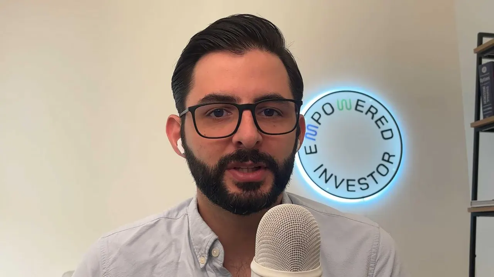

Aprendé a invertir desde cero
Una clase de 32 minutos con los temas importantes: qué es invertir, dónde se hace, con qué instrumentos y cómo se arranca desde Costa Rica. Abajo tenés el resumen por temas, con el minuto de cada uno.

La clase, resumida por temas
Esto es lo que se ve en el video. Cada tarjeta trae el minuto por si querés volver a un tema puntual.
Los sistemas de pensiones suponen una pirámide poblacional creciente, y la pirámide se invirtió. Desde el año 2000 las reformas van hacia lo privado: la responsabilidad del retiro pasó del gobierno a cada persona.
Los gobiernos gastan más de lo que ganan e imprimen dinero. No lo ves en tu plata: lo ves en los precios. El ajuste es simple: si tu retorno fue 10% y la inflación 3%, tu retorno real fue 7%.
Invertir es gratificación diferida: le mandás plata a tu yo de 65 años. El costo de oportunidad, con números: $10,000 desde abril de 1999 serían hoy $76,000 en el Nasdaq 100, $45,000 en el S&P 500, $11,000 en un CDP al 3% y $5,000 debajo del colchón.
Se planea desde tu ingreso meta y tu capacidad de ahorro mensual: acumular un capital suficiente, ponerlo en un vehículo de ingreso pasivo y vivir de ese ingreso sin extinguir el capital. Y que quede legado.
La bolsa más desarrollada del mundo, con empresas globales. Un índice es una canasta con reglas (S&P 500, Nasdaq 100) y el ETF te deja comprar la canasta entera en una sola compra.
El impuesto acá es territorial, y al abrir el broker se llena el formulario W-8. Para arrancar necesitás tres cosas: una cuenta de inversión, la transferencia internacional y una estrategia.
Que esté en EE. UU. y sea miembro de SIPC, que cubre hasta $500,000 en inversiones si el broker quiebra (en Costa Rica el banco te cubre unos ₡6 millones). Por qué no productos offshore ni plataformas donde no sos dueño de la acción, y la diferencia real entre SIPC y FDIC.
De tu cuenta bancaria a tu cuenta de inversión, siempre con el mismo titular. Las leyes anti-lavado lo hacen infranqueable: nadie más puede mover esa plata.
Comprar y sostener el S&P 500 es la base, totalmente válida. Lo nuestro va encima: una metodología basada en papers, con más riesgo cuando estás lejos de tu meta y desapalancando conforme te acercás, hasta asegurar en renta fija.
Bienes raíces y REITs con sus pros y contras, y la ráfaga: opciones (no las recomendamos), futuros y el margin call, private equity, y bitcoin como una posición pequeña de retorno asimétrico según tu perfil.
Horizonte de 10 años o más, decisiones basadas en data (inversión cuantitativa), tu perfil de riesgo según edad, patrimonio y personalidad, y la mentalidad para las caídas: la data fría le gana a las emociones.
En una llamada abrimos tu cuenta, te damos la guía clic por clic de la transferencia y el seguimiento para que la plata llegue bien. Tu cuenta, tus activos, tu control.
Los retornos mencionados son históricos. No se garantizan retornos. Los resultados pasados no garantizan resultados futuros.
¿Tiene sentido que gestionemos tu portafolio?
Si después de la clase querés que lo construyamos con vos, mirá este video de 4 minutos: qué hacemos, cómo funciona y qué pasa en la llamada.
Esto es para vos si…
- ✓Tenés mentalidad de largo plazo: podés invertir por 10 años o más.
- ✓Sos bueno en lo tuyo, pero no tenés tiempo de gestionar tu portafolio de manera profesional.
- ✓Querés delegar la gestión sin perder el control de tu plata.
Esto NO es para vos si…
- ✕Buscás hacerte rico rápido.
- ✕Prevés que vas a necesitar esa plata en menos de 10 años. (Podés sacar la plata cuando querás, sin penalizaciones ni letra pequeña. Esto es solo tener la mentalidad de inversión a largo plazo.)
- ✕Querés trading diario o una "segunda fuente de ingresos" a partir del trading.
Si ese es tu caso, te lo decimos de frente en la llamada y no te hacemos perder el tiempo.
La cuenta es 100% tuya
- ✓Se abre a tu nombre, en un bróker regulado en EE. UU., miembro de FINRA y SIPC.
- ✓Vos sos el único dueño legal. La ves en tiempo real, cuando querás.
- ✓Nada de fondos comunes ni estructuras offshore.
Nuestro permiso es delimitado: solo comprar y vender
- 🔒No podemos transferir tu plata. A ningún lado.
- 🔒No podemos deducir comisiones de tu cuenta.
- 🔒El único que puede depositar o retirar sos vos. Ni tu esposo o esposa, ni hermanos, ni familiares. Así de estrictas son las leyes anti-lavado de EE. UU.
Profesionales como vos ya confían en nosotros

A pesar de contar con formación en finanzas, nunca había tenido la oportunidad de involucrarme directamente en la operativa de inversiones en bolsa. Contar con el acompañamiento de José marcó una gran diferencia: me guió paso a paso en la apertura de mis cuentas y juntos definimos una estrategia alineada con mi perfil de riesgo, lo que me brindó mayor confianza y claridad. Lo que más valoro es la comunicación, siempre abierta, fácil y transparente. Sin duda, recomendaría su servicio a cualquier persona interesada en empezar a invertir con seguridad y acompañamiento profesional.

Como médico especialista, mi conocimiento en inversiones era limitado y mi enfoque se centraba en el ahorro pasivo. José y su equipo no solo brindan asesoría, sino que realmente educan, explicando cada paso de forma clara y accesible. Destaco la comunicación constante y el seguimiento cercano; incluso la apertura de cuentas en el extranjero y las transferencias internacionales fueron guiadas paso a paso. Hoy tengo una perspectiva completamente distinta sobre mis finanzas. Ha sido una experiencia formativa y transformadora en mi relación con el dinero.

Hemos trabajado mis inversiones por aproximadamente 3 años y puedo decir que, de todas las estrategias y vehículos financieros que he intentado, Empowered Investor es donde me quedo, por su consistencia en resultados y asesoría constante. Siempre hemos estado en una posición ventajosa para tomar decisiones y aprovechar el capital para distintas necesidades personales. Más que un lugar donde invertir, es saber que tengo un aliado que me ayuda a tomar decisiones con mi mayor interés en mente.

Hice mi primera inversión después de abrir mi propia cuenta gracias a José, y puedo decir que me siento muy tranquila y confiada con su asesoría. Desde el primer encuentro se notó lo apasionado que es con el tema. El dinero siempre es delicado, y encontrar a una persona que le dé una perspectiva tan integral ha sido muy valioso. Me emociona porque no solo me ayudan a tomar decisiones, sino también a aprender para poder hacerlo sola en algún momento. Recomendadísimo.

Mi experiencia con Empowered Investor ha sido verdaderamente transformadora. No solo aprendí los fundamentos de la inversión, sino que gané la confianza que necesitaba para dar el paso hacia los mercados bursátiles. El acompañamiento ha sido excepcional: cercano, claro y siempre dispuesto a resolver dudas con paciencia y profesionalismo. Lo que más valoro es el enfoque educativo combinado con un servicio completamente personalizado. No solo te enseña a invertir, te empodera para tomar el control de tus finanzas y construir un futuro con mayor libertad y seguridad.

Estoy muy agradecido con la ayuda para invertir fuera del país y por explicarme los grandes riesgos a los que uno está expuesto al tener plata en bancos de Costa Rica, que solo te cubren hasta aprox. 6 millones de colones. Además, me empujaste a invertir y a diversificar mi portafolio. Para una persona como yo, que pasa enredada en el negocio, es necesario ese empujón.

Estoy muy contenta con el servicio de Empowered Investor. Aunque llevo menos de un año invirtiendo, José se ha asegurado de que me sienta cómoda, está atento a mis dudas y me ha ido guiando en cada etapa, desde abrir la cuenta hasta realizar las primeras inversiones. Ha sido un gran paso para ampliar mi portafolio y atreverme a probar un tipo de inversión un poco más arriesgada, con la confianza de que cuento con una persona que toma decisiones inteligentes, estratégicas y procurando siempre lo mejor para mí.

Yo no entendía nada de inversiones, pero sabía que quería empezar. José no solo me ayudó a invertir, sino que se tomó el tiempo de explicarme cada opción de una manera súper clara y sencilla. Me fue guiando paso a paso durante todo el proceso, desde abrir la cuenta y transferir el dinero hasta realizar las inversiones. Gracias a su ayuda, hoy no solo estoy invirtiendo en la bolsa, sino también en bienes raíces. Estoy demasiado contenta de haber tomado la decisión de empezar y de haber contado con un acompañamiento tan bueno y profesional.

Llevo 3 años de invertir con Empowered Investor y la experiencia ha sido excelente. Desde la asesoría sobre niveles de riesgo y formas de invertir hasta poder personalizar mi portafolio a mis necesidades específicas, el equipo ha sido súper atento y profesional. Incluso, cuando mis necesidades y perfil cambiaron inesperadamente, me ayudaron a ajustar mi portafolio con mucha agilidad. Desde que invierto con ellos ha cambiado drásticamente mi manera de planear financieramente para el futuro.
Experiencias reales de clientes. No se garantizan retornos. Los resultados pasados no garantizan resultados futuros.
¿Cómo funciona la llamada?
Empezamos con un diagnóstico: cuánto tenés, dónde está y qué querés lograr. Si no te podemos ayudar, te lo decimos y terminamos la llamada ahí. Tu tiempo vale, y el nuestro también.
Cuánto necesitás acumular según tu ingreso meta, y cómo llegamos ahí usando nuestras metodologías basadas en papers.
Los pasos concretos para llegar ahí, adaptados a tu caso.
¿Querés que te ayudemos a construirlo? Vos decidís. Sin presión.
Agendá tu llamada de diagnóstico
Elegí el día y la hora que te sirvan. Valoramos tu caso y te decimos con honestidad si tiene sentido trabajar juntos.
¿No cargó el calendario? Abrilo en una pestaña nueva →Empowered Investor · Contenido educativo, no es asesoría financiera personalizada. No se garantizan retornos. Los resultados pasados no garantizan resultados futuros; toda inversión implica riesgo.